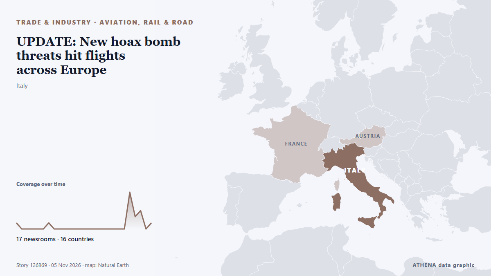

New hoax bomb threats hit flights across Europe

Italian, French and Bulgarian fighter jets scrambled Thursday as about 20 flights were hit by a third day of hoax bomb alerts across Europe, authorities and airlines said. von The Local Norway
Unabhängig gemeldet von 18 Medien in 17 Ländern seit dem 4. Nov., zuerst von Simple Flying; die Berichterstattung flaut ab. ATHENA stuft das Risiko als mäßig ein (2.4/10), vor allem wegen der Schwere des beschriebenen Schadens und seiner geografischen und sektoralen Reichweite. Die Konfidenz liegt bei 85 % (hoch): 18 Medien bestätigen es unabhängig, bei einer mittleren Verlässlichkeit der Quellen von 70 %. Medien nach Land: Vereinigte Staaten (2), Indien (2), Finnland (2). Berichterstattung: 4. Nov. bis 5. Nov., 24 Stunden.
Warum es wichtig ist: Störungen in Handel, Industrie oder Infrastruktur wandern durch die Lieferketten und verändern Kosten und Lieferzeiten weit entfernt.
Was sich geändert hat: 12 neue Berichte von 12 Redaktionen in den 24 Stunden bis 5. Nov..
Erste Schlagzeile: Case registered over bomb hoax at Kochi airport
Schlagzeilen werden auf Englisch angezeigt, wie veröffentlicht.
Auf einen Blick
Ausgewählt, bewertet und geschrieben nach der veröffentlichten Methodik von ATHENA. Kein Redakteur greift in einzelne Ereignisse ein. So entsteht ATHENA ›
| 04 Nov 13:32 UTC | 1 |
|---|---|
| 04 Nov 14:32 UTC | 0 |
| 04 Nov 15:32 UTC | 0 |
| 04 Nov 16:32 UTC | 0 |
| 04 Nov 17:32 UTC | 0 |
| 04 Nov 18:32 UTC | 0 |
| 04 Nov 19:32 UTC | 1 |
| 04 Nov 20:32 UTC | 0 |
| 04 Nov 21:32 UTC | 0 |
| 04 Nov 22:32 UTC | 0 |
| 04 Nov 23:32 UTC | 0 |
| 05 Nov 00:32 UTC | 0 |
| 05 Nov 01:32 UTC | 0 |
| 05 Nov 02:32 UTC | 0 |
| 05 Nov 03:32 UTC | 0 |
| 05 Nov 04:32 UTC | 0 |
| 05 Nov 05:32 UTC | 0 |
| 05 Nov 06:32 UTC | 0 |
| 05 Nov 07:32 UTC | 0 |
| 05 Nov 08:32 UTC | 0 |
| 05 Nov 09:32 UTC | 0 |
| 05 Nov 10:32 UTC | 6 |
| 05 Nov 11:32 UTC | 2 |
| 05 Nov 12:32 UTC | 3 |
| 05 Nov 03:31 UTC | 0.0 |
|---|---|
| 05 Nov 12:19 UTC | 1.2 |
| 05 Nov 13:25 UTC | 3.2 |
| 05 Nov 14:52 UTC | 2.4 |
Warum diese Zahlen
Bedeutung
Risiko
Konfidenz
Die Berichterstattung – wer berichtete, und wann
Schlagzeile wie veröffentlicht · öffnet das Original- Simple Flying · Vereinigte StaatenUnited Crew Spots Passenger “Texting He Was Going To Hijack” Plane, Cockpit Locked Down
- The Hindu · IndienCase registered over bomb hoax at Kochi airport
- Yle News (alternative feed) · FinnlandFinnair flights to Rome and Vienna hit by hoax bomb threats
- Gulf News · Vereinigte Arabische EmirateEuropean flights hit by hoax bomb threats for third day this week; fighter jets escort planes
- The Local Italy · ItalienAt least three Italy flights hit by hoax bomb threats
- NDTV · IndienPlane Escorted To Rome By Fighter Jet After Bomb Alerts Disrupt Two Flights
- CBC News (alternative feed) · KanadaBomb threats affect at least 27 flights, leading to emergency landings at several European airports
- ANSA English · ItalienItalian flights among those hit by new wave of bomb alerts, Air Force jets scrambled
- Yle News — page reader · FinnlandFinnair flights to Rome and Vienna hit by hoax bomb threats
- The Local Norway · NorwegenUPDATE: New hoax bomb threats hit flights across Europe
- Hespress English · MarokkoBomb threats hit European flights for third day
- TRT World · TürkeiBomb threats disrupt several European flights again
- CBS News (World) · Vereinigte StaatenHoax bomb threats affect at least 20 European flights within hours